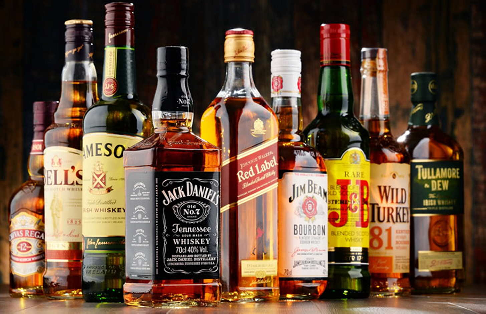

Виски и блюда из рыбы.

РЫБНОЕ ФИЛЕ В СОУСЕ
Требуется: 300 г рыбного филе, 2 яйца, 100 мл молока, 100 г муки, 40 мл растительного масла, 50 г жира, 100 мл виски, соль.
Для соуса: 200 г кетчупа, 2 ст. л. тертого хрена, 100 мл красного вина, грибной бульонный кубик.
Способ приготовления. Приготовьте тесто из яиц, молока, муки, растительного масла и соли. Тесто должно быть густым, как на оладьи. Нарежьте рыбное филе на порции, посолите, сбрызните виски, подождите 15 минут и, обмакнув в тесто, обжарьте в жире до готовности. Подайте к рыбе соус, приготовленный из хрена, смешанного с кетчупом и красным вином.
«ЗАГОРЕВШАЯСЯ» РЫБА
Требуется: 600 г филе нежирной рыбы, 100 г сливочного масла, 4 яйца, 200 г сметаны или сливок, соль, перец, приправа для рыбы.
Способ приготовления. Рыбу нарежьте на куски, посолите, облейте виски и подожгите на 1 минуту, затушите огонь, сбрызгивая рыбу водой. Положите мясо в кастрюлю с разогретым маслом, обжарьте с двух сторон. Слейте масло и добавьте к рыбе сваренные вкрутую и мелко порезанные яйца, сметану (сливки), смешайте, посыпьте приправой, тушите до готовности. Подайте в холодном виде.
ЖАРЕНАЯ РЫБА С МАЙОНЕЗОМ
Требуется: 400 г филе судака, 1 морковь, 1 головка репчатого лука, 10 ст. л. зеленого горошка, 300 г майонеза, 100 мл виски, приправа для рыбы, перец, соль, петрушка, сельдерей.
Способ приготовления. Приготовленное филе судака мелко порежьте, посолите, хорошо смочите в виски и немного обжарьте в масле. Остудите филе, посыпьте перцем, приправой для рыбы. Тертую морковь спассируйте на масле, смешайте с рыбой, нарезанным сельдереем и петрушкой, полейте майонезом.
ЗАЛИВНАЯ РЫБА
Требуется: 400 г филе карпа или хека, 2 моркови, 2 лавровых листа, 200 г зеленого горошка, 150 г спагетти, 1 ст. л. лимонного сока или 1 средний лимон, 60 мл виски, 40 г растительного масла, 2 ст. л. майонеза, соль, перец.
Способ приготовления. Филе отварите в подсоленной воде, в которую положите перец, лавровый лист. Бульон процедите, рыбу охладите. Сбрызните рыбу виски и подожгите на 2 минуты, потушите, опустив рыбу в бульон. Отварите в рыбном бульоне макароны и, не промывая их, положите в рыбу, смешайте и добавьте спассированную на масле морковь. Добавьте зеленый горошек и майонез, лимонный сок или цедру лимона.